European Economic Sentiment Indicator (ESI)
The European Commission's monthly composite survey — the first international leading indicator, used to forecast Eurozone GDP and Eurostoxx 600 direction.
The ESI wraps all of Europe's leading indicator surveys into one timely monthly composite (scaled to a mean of 100), which you read to forecast Eurozone GDP, Eurostoxx 600 returns and your portfolio bias.
The gist
- The Eurozone must be treated as a single economic area (19 members, common currency, one central bank); in 2019 it was 15.2% of global GDP — the third largest economic zone, 2.62x the Japanese economy.
- Analyse the harmonised Euro Area (EA), not the whole EU, and within it focus on the largest economies — Germany, France and Italy.
- The ESI is a composite of 5 weighted surveys: Industrial 40%, Services 30%, Consumer 20%, Retail 5%, Construction 5%.
- Each component is a balance (% positive minus % negative replies); the composite is scaled to a long-term mean of 100 and standard deviation of 10, so >100 = above-average sentiment, <100 = below (±10 = a 1-SD move).
- Industrial + Services (70%) carry the cyclical signal; Consumer, Retail and Construction are structurally almost always negative (a 'misery index') — read their relative move, not their absolute sign.
- The Eurostoxx 600 moves the same direction as Eurozone GDP ~72.28% of quarters; the tightest fit is a 5-year rolling correlation at a 6-month lead (61.63%).
- Released on the last business day of the month for the same month — a very timely leading indicator; use it to spark European Country-ETF and ADR trade-idea clues.
Where the ESI sits: the Leading Indicator Dashboard
- The full dashboard splits into U.S. Leading Indicators (money markets, surveys, cyclical commodities) and International Leading Indicators.
- The European Economic Sentiment Indicator (ESI) is the highlighted International survey — the first international leading indicator covered in the series.
- Other international surveys listed: China Manufacturing PMI (Official & Caixin) and Markit PMIs for Japan, UK, Brazil, Canada.
Having built the full U.S. leading-indicator suite earlier in the course, the lesson turns outward. Europe gets one report — the ESI — that packages all of its surveys together, unlike the U.S. where they publish separately.
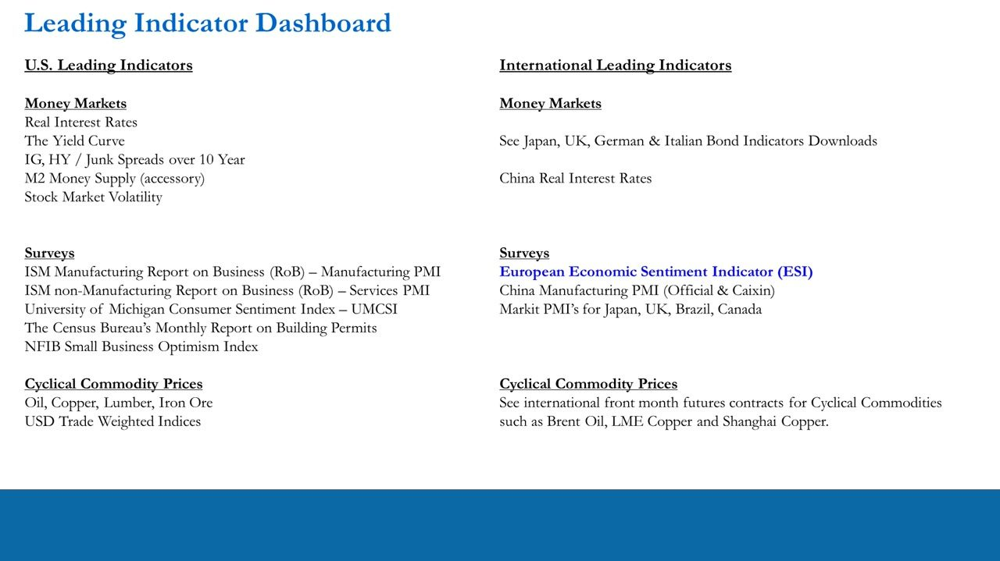
Why the Eurozone matters: sizing the economic area
- There are 19 member states of the Eurozone; because they share a common currency (mandated by the ECB) they must be treated as a single economic area.
- The Eurozone is 62.2% the size of the United States and 90% the size of China.
- Global GDP in 2019 was $87.345trn: U.S. 24.5%, China 16.8%, Eurozone 15.2%.
- U.S. + China + Eurozone together = $49.5trn, or 56.5% of global GDP.
- Ranked as one area the Eurozone would be the third-largest economic zone — 2.62x larger than the Japanese economy.
To build a global macro view you must predict U.S., China and Eurozone GDP, because these three blocs are more than half of the world economy. Predicting European GDP growth improves the read on global (rest-of-world) growth, which feeds back into U.S. GDP and therefore your U.S. portfolio bias (long / short / neutral).
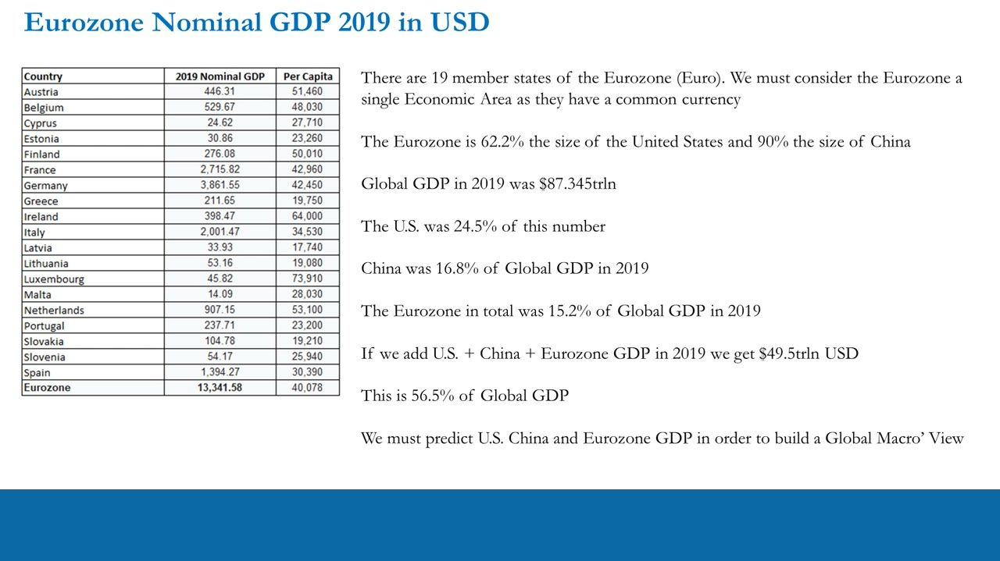
European Union vs Eurozone
- The Eurozone (Euro Area, EA) is the subset of EU countries that use the Euro and are mandated by the ECB.
- EU members outside the Eurozone keep their own currency and central bank — e.g. Poland (Zloty), Hungary (Forint), Romania (Leu).
- Those non-euro central banks are part of the European System of Central Banks (ESCB) and must meet convergence criteria to eventually join the Euro.
- As of January 2021 the UK was still included in the ESI EU stats despite leaving the EU (this was expected to change).
You get a much cleaner read on European GDP growth by focusing on the harmonised, common-currency, single-monetary-policy bloc — the Eurozone — rather than the whole EU.
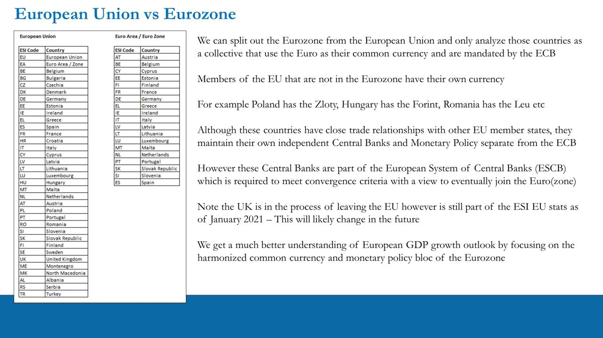
The Eurostoxx 600 leads Eurozone GDP (quadnomial)
- Contingency analysis of Eurostoxx 600 vs Eurozone Real GDP direction since 1995 (101 observations).
- Same-direction quarters (both up or both down): 73 / 72.28% — GDP explains 72.28% of Eurostoxx 600 moves.
- When they diverge, it is usually the index falling while GDP does NOT fall (profit-taking): 22.77%.
- Only 4.95% of the time since 1995 has the Eurostoxx 600 moved up while GDP moved down.
This is the European mirror of the S&P/U.S.-GDP relationship taught earlier: the equity index and real GDP move together the large majority of the time, so a GDP forecast is a strong prior for index direction.
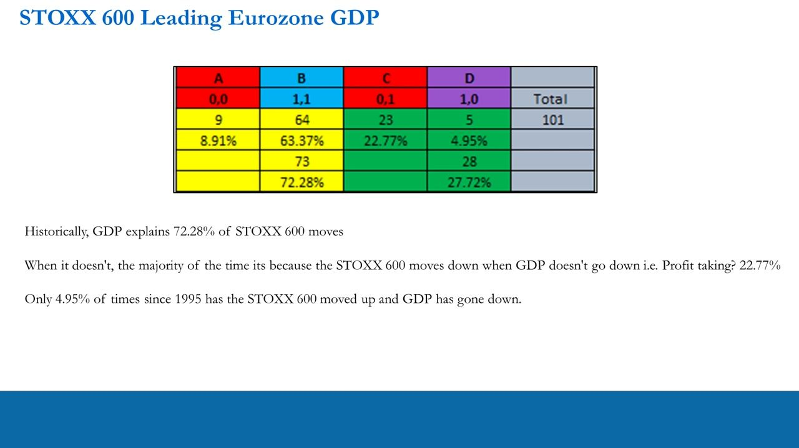
The index-GDP relationship over time and its best lead
- Time-series (Mar-95 to Sep-20): Eurostoxx 600 YoY (volatile, ~-45% to +50%) tracks the smoother EU Real GDP YoY (~-2% to +4%, collapsing to ~-15% at the 2020 COVID plunge).
- Average 5-yr correlation, Eurostoxx 600 YoY vs EU Real GDP YoY, by lag: No lag 36.25%, 3-mo 56.94%, 6-mo 61.63%, 9-mo 56.86%, 12-mo 44.16%.
- Peak correlation is at a 6-month lag (61.63%).
- The rolling correlation held ~80-95% through 2004-2014, then broke down after ~2015 (dipping below zero) under heavy ECB stimulus.
The tightest historical fit is the index leading GDP by about 6 months. The post-2015 breakdown is a reminder the relationship is a probability, not a law — central-bank intervention can decouple the index from the underlying economy for a time.
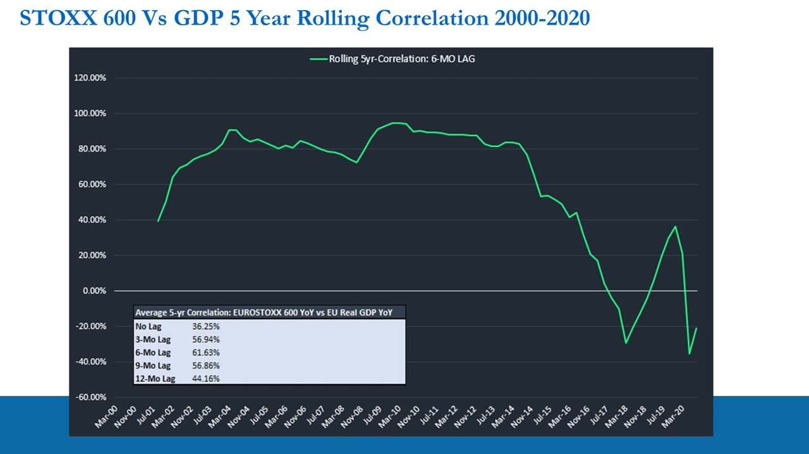
What the ESI is and when it's released
- The European Commission publishes all of Europe's main leading indicators in one monthly report — the ESI.
- Released on the last business day of the month for the same month, making it a very timely leading indicator for forecasting European GDP growth.
- It is a large report covering every country and needs significant spreadsheet organisation to build and maintain.
- Source: the EC business-and-consumer-surveys time-series download (Main Indicators >> Seasonally Adjusted, Total Sector).
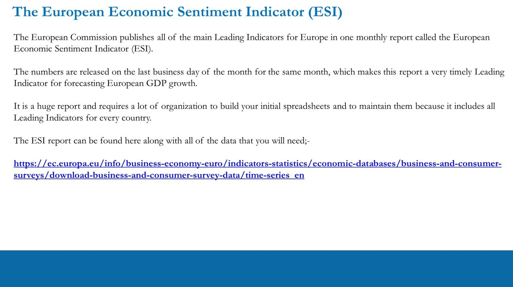
ESI survey design: 5 weighted components, scaled to 100
- Every country reports the same 5 component surveys, enabling both absolute (vs itself over time) and relative (vs other countries) comparison.
- Weights: Industrial (INDU) 40%, Services (SERV) 30%, Consumer (CONS) 20%, Retail (RETA) 5%, Construction (BUIL) 5% — composite = 100%.
- Each sub-component is measured as the balance: % of respondents giving positive minus negative replies.
- The composite ESI (per country, plus EU and EA aggregates) is scaled to a long-term mean of 100 and a standard deviation of 10.
- >100 = above-average economic sentiment, <100 = below average (so ±10 points = a 1-standard-deviation move).
The 100 line is the long-term average, so you read the ESI relative to 100, not as an absolute level. Peaks historically top out around 115; deep troughs (e.g. the 2009 GFC and 2020 COVID) are 2-3 SD moves below 100.
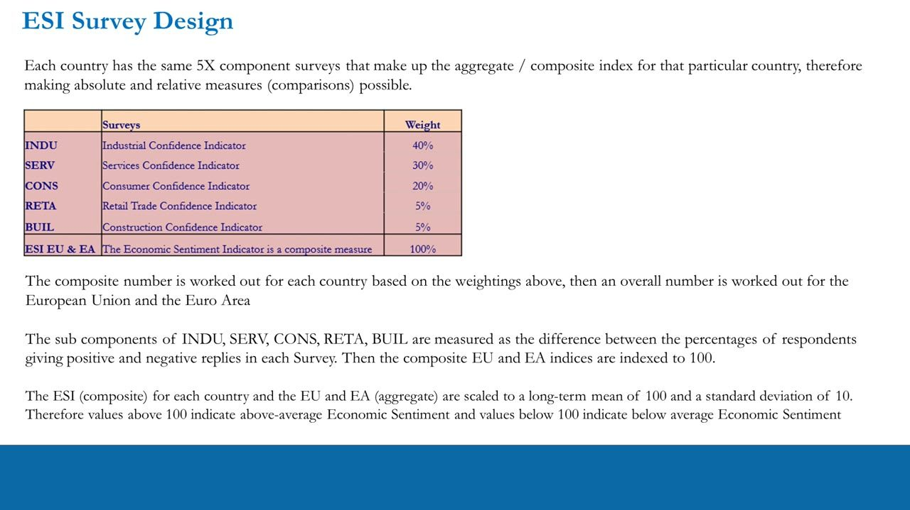
Reading the components: Industrial + Services carry the signal
- Industrial (40%) — Europe's equivalent of the ISM manufacturing PMI; on average bearish (its long-term mean is below zero, no reading has ever hit +20 since 1985). Read its contribution and turning points, not the absolute sign.
- Services (30%) — Europe's equivalent of ISM services; mostly positive but its long-term average is drifting lower as services replace manufacturing. Services often 'bail out' manufacturing.
- Industrial + Services = 70% of the index and the cyclical signal; whether they are aligned or divergent is the key read.
- The 'always-bearish' trio — Consumer (20%), Retail (5%), Construction (5%): the European consumer is essentially always negative ('a misery index — just a question of how miserable they are'); watch the relative move (less vs more bearish), not the absolute level.
Because the smaller three components are structurally negative, their absolute readings are uninformative — they matter for relative moves and trade-idea clues rather than the macro bias. Focus overwhelmingly on the manufacturing + services contribution when forecasting Eurozone GDP and the Eurostoxx 600.
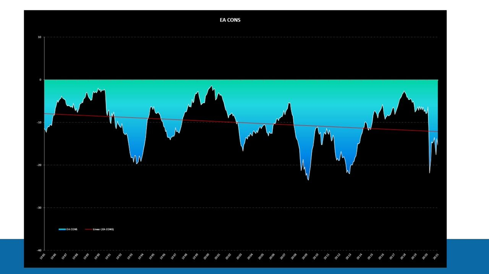
The Euro Area ESI over history
- EA ESI (1995-2021) with the mean reference line at 100.
- Peaks above 100: ~113 (2000), ~118 (2000-01), ~112 (2007), ~115 (2017-18).
- Troughs below 100: ~67 (2009 GFC), ~84 (2012-13 euro crisis), and a sharp COVID plunge to ~68 in 2020, recovering to ~90 by 2021.
The chart makes the 100-line reading concrete: the EA spends long stretches above or below average, and the deepest below-100 episodes line up with the GFC, the euro-sovereign crisis and COVID.
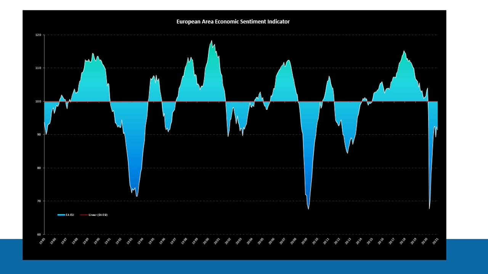
Turning the read into trades: Country ETFs and ADRs
- Eurozone country ETFs in the top-25 of world GDP (with options): Germany EWG, France EWQ, Italy EWI, Spain EWP, Netherlands EWN.
- Smaller-economy ETFs: Austria EWO, Belgium EWK (options), Finland EFNL, Greece GREK (options), Ireland EIRL, Portugal EPOL.
- Use the ESI to spot which countries and which parts of their economies are moving most, then generate Country-ETF or single-stock ideas, including European ADRs on the NYSE / NASDAQ.
- Eliminate countries too small to care about, leaving a tradable opportunity set; beware that large-economy ADRs are often global businesses, not pure European plays.
The ESI generates clues, not instant trades. Any single-stock idea must still go through the full IPLT / PTM trade-idea generation process. The ESI is also useful for U.S. stocks with European revenue/profit exposure. OTC ADRs are generally not tradable on retail brokerage platforms.
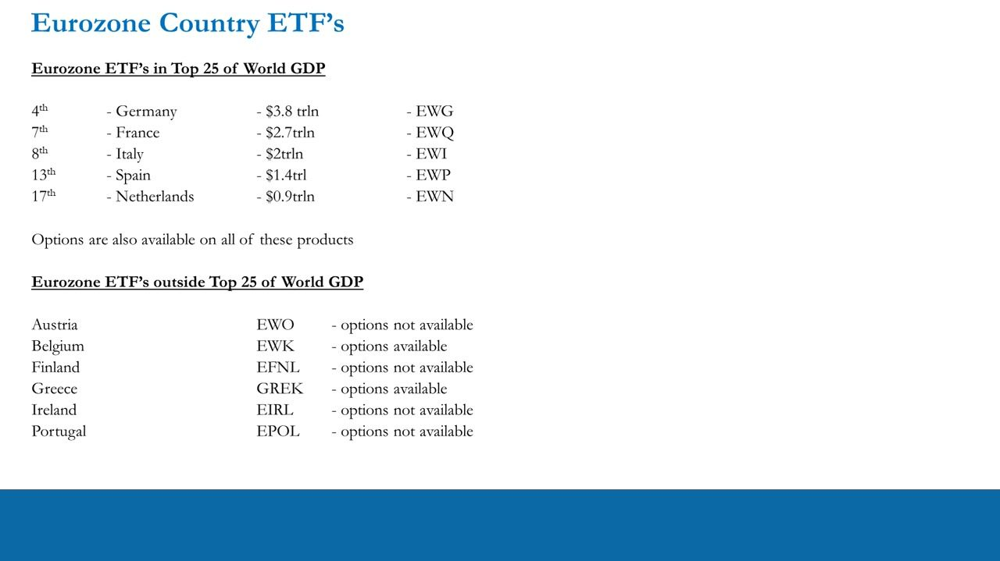
Working the data: the All (heatmap) and Movers tabs
- The 'All' tab is a color-coded heatmap of bullish/bearish ESI sentiment across all countries by month (green above 100, red below).
- The pattern makes the cycle obvious: green ~110+ in late-2018/early-2019, a deep-red sub-70 band in mid-2020 (e.g. Apr-20 EU 67.1, EA 67.8, DE 72.3), partially rebuilding into early 2021.
- The 'Movers' tab ranks countries by their change from the previous month, one list per component (ESI, INDU, SERV, CONS, RETA, BUIL), most bullish (green) to most bearish (red).
- Use the Movers ranking to search for single-stock trade ideas in specific countries/sectors via listed ADRs and options — as idea sparks, after the full trade-idea process.
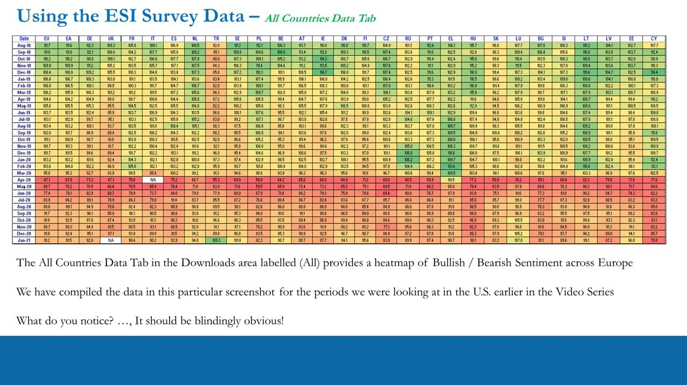
Summary
- The ESI is vital to the outlook for European GDP growth, Eurostoxx 600 direction, the global macro view and portfolio bias.
- Use it alongside the U.S. leading indicators to form a Global Macro view in the absolute (global GDP) and relative (U.S. vs Europe).
- Zoom into the harmonised Euro Area and focus on the largest economies — Germany, France and Italy are always the focus.
- Combine with European money-market indicators — German Bunds, French OATs/BTFs, Italian BTPs — applying the same real-rates, yield-curve and spread analysis used for U.S. debt (note the European corporate credit market is much smaller than the U.S.).
- Monthly ESI data also signals what to expect from the ECB in terms of likely policy response.
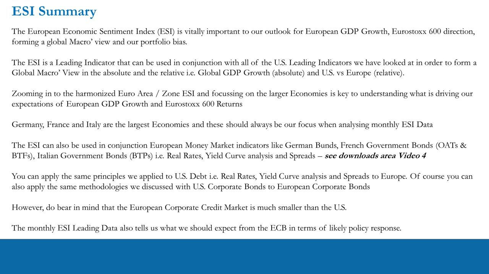
Glossary
- ESI (Economic Sentiment Indicator)The European Commission's monthly composite survey — 5 weighted confidence surveys per country plus EU and EA aggregates — scaled to a long-term mean of 100 (SD 10); >100 = above-average sentiment, <100 = below.
- Euro Area (EA) / EurozoneThe 19 EU member states that share the Euro and are mandated by the ECB; analysed as a single economic area and the preferred focus over the wider EU.
- Component balanceHow each ESI sub-survey is measured: the percentage of respondents giving positive replies minus those giving negative replies.
- INDU / SERV / CONS / RETA / BUILThe 5 ESI components — Industrial (40%), Services (30%), Consumer (20%), Retail (5%), Construction (5%) confidence.
- Misery indexAnton's term for the always-negative European Consumer, Retail and Construction components — read their relative move (less vs more bearish), not the absolute sign.
- 6-month leadThe lag at which the Eurostoxx 600 YoY has its peak 5-year rolling correlation with EU Real GDP YoY (61.63%) — the index leads GDP by ~6 months.
- ADR (American Depository Receipt)A U.S.-listed line of a foreign stock (NYSE/NASDAQ/OTC); a way to trade European names, often with listed options unavailable on the domestic euro line. OTC ADRs are generally not tradable on retail platforms.